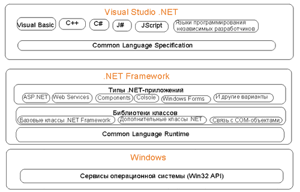
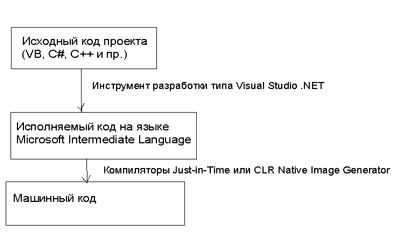
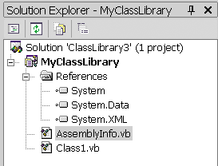
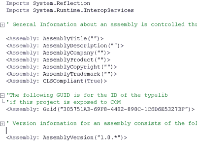
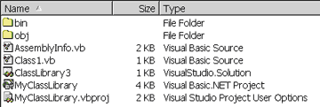
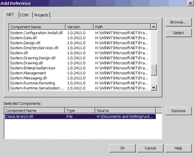

Андрей Колесов
Один из ключевых элементов архитектуры Microsoft .NET - среда .NET Framework. Она отвечает за реализацию нового режима исполнения (а значит, и разработки) приложений на локальном компьютере. Речь идет о дополнительной связующей среде между приложениями и ОС, с одной стороны, и между программными компонентами одного приложения -- с другой.
В этой статье мне хотелось бы сделать общий обзор архитектуры .NET Framework, чтобы показать основную логику работы на концептуальном уровне, не очень вдаваясь в детали ее реализации. Более подробное изучение среды еще впереди.
С точки зрения разработчика ОС Windows - это в первую очередь набор базовых функций Win API, реализованных в виде DLL. До 1993 г. в Windows основной моделью создания многокомпонентных приложений было именно использование вспомогательных модулей поддержки в виде DLL (в свое время пришедших на смену классическому варианту, предполагающему создание единого исполняемого модуля путем включения в него процедур из двоичных LIB-библиотек). В 1993 г. Microsoft предложила новую модель многокомпонентных приложений - COM (Common Object Model). По большому счету, главная идея здесь состоит в применении в дополнение к исполняемому коду метаданных, обеспечивающих автоматический контроль за передачей параметров (а также унификация форматов параметров).
Конечно, можно говорить о достоинствах COM по сравнению с традиционными DLL (хотя достоинства всегда сопровождаются и недостатками, в данном случае в виде снижения производительности), но я категорически не согласен с высказываниями некоторых авторов, смысл которых сводится к следующему: "После выхода COM разработчики поняли, что им больше не надо писать весь код приложений с нуля". Если вдуматься, использование готовых компонентов - ключевая технология программирования на протяжении всей истории этого вида деятельности.
Честно говоря, я никогда не испытывал особого восторга от конкретной реализации идей COM и еще несколько лет назад высказывал мнение, что она несет в себе серьезную угрозу потери управляемости Windows-приложений (см., например "Проблемы компонентной модели ПО", PC Week/RE № 32/97). Представляя первую бета-версию .NET Framework, корпорация Microsoft открыто заявила, что одна из целей реализации этой среды - решение проблемы DLL Hell ("ад DLL"), связанной с использованием общих DLL и OCX, которые неконтролируемым образом меняют версии, удаляются и т. п. Другие ключевые задачи .NET Framework - унификация библиотек функций для различных языков, а также повышение контроля за приложениями с точки зрения безопасности и эффективного использования ресурсов.
Структура и логика работы
Структура .NET Framework представлена на рис. 1. Как видно, речь идет фактически о единой среде исполнения программ и поддержки их разработки. Именно здесь собраны базовые классы для всех языков программирования, реализованные в виде библиотеки ядра System, а также большого числа (более 20) специализированных библиотек с именами System.Data, System.XML и т. д. Над ними располагается набор средств формирования исполняемых модулей различного типа (опять же единый для разных языков).
|  |
| Рис. 1. Структурная схема .NET Framework.
|
Собственно, с точки зрения разработки приложений именно в этом заключается новизна (но лишь относительная, для Windows-программирования) данного решения: вспомогательные функции отделены от бизнес-логики приложений, реализуемой с помощью конкретных языков. Кроме очевидного преимущества такой унификации функций (зачем писать отдельные функции, вычисляющие синус, для разных языков?), это создает хорошие предпосылки для улучшения управления оперативной памятью. Ведь, как известно, огромное число проблем надежности программ связано с использованием разных механизмов динамического распределения пространства в различных языках.
Сверху располагаются сами инструменты разработки, представленные в данном случае системой Visual Studio .NET, в которой каждый из языков взаимодействует с .NET Framework через общий языковой интерфейс. Подробное изучение VS.NET еще впереди, а сейчас ограничимся несколькими замечаниями.
С одной стороны, такой механизм позволяет достаточно просто подключать к рассматриваемой среде различные языки. В настоящее время о создании таких средств (COBOL, FORTRAN, Perl и т. п.) объявили уже более 20 независимых разработчиков. В то же время почти у всех этих инструментов есть альтернативные варианты среды, которые работают вне VS.NET и напрямую взаимодействуют с .NET Framework.
С другой стороны, такая унификация автоматически нивелирует функциональные возможности разных языков, в значительной степени сводя проблемы выбора конкретного инструмента к приверженности конкретных людей тому или иному синтаксису. Это сегодня особенно хорошо видно на примере VB.NET и C#. Поскольку, говоря о платформе .NET, нам никак не избежать сравнения ее с Java 2 Platform, то заметим, что отличие между ними в том, что в первом случае имеются разные синтаксические формы для единого .NET-языка. В какой степени оправдан отказ от специфики языков (которая проявлялась в разной их эффективности для решения различных предметных задач) - на эту тему можно подискутировать отдельно.
Common Language Runtime
Выше мы говорили о компонентах .NET Framework, относящихся к процессу разработки приложений. CLR (Common Language Runtime, общая для языков среда исполнения) - это краеугольный камень в фундаменте организации вычислительных процессов всей концепции .NET. Именно здесь должны решаться основные задачи повышения надежности и безопасности программ, а также платформенной независимости. CLR - это отдельная большая тема, поэтому мы рассмотрим ее лишь тезисно.
Все исполняемые модули .NET-приложений (будем называть их CLR-модулями) реализуются не в виде машинного кода (native, "родного" для данного компьютера), а с помощью так называемого байт-кода по спецификациям промежуточного языка Microsoft Intermediate Language (MSIL). Иными словами, каждый совместимый с .NET-компилятор должен преобразовать исходный код на языке высокого уровня в двоичный MSIL-код, который уже затем будет исполняться в среде CLR. Идея и реализация подобного подхода совсем не новы, для Basic и Virtual Pascal это делалось еще в 1970-х, а про Java известно и нынешнему поколению разработчиков.
Однако, в отличие от Java, CLR будет выполнять код не в режиме классического интерпретатора, а путем предварительной компиляции в машинный код отдельных фрагментов программы или целого приложения (рис. 2). Первый вариант - основной, при этом применяется так называемый Just-In-Time компилятор, который выполняет преобразование MSIL в машинный код по мере обращения к соответствующим процедурам (т. е. неиспользуемые фрагменты программы вовсе не компилируются). Данный подход также хорошо известен; он, в частности, уже более шести лет используется в платформе "1С:Предприятие".
|  |
| Рис. 2. Схема компиляции .NET-приложений.
|
Как известно, режим интерпретации имеет два главных преимущества по сравнению с использованием машинного кода: повышение безопасности программ (точнее, защищенности системы в целом от действия конкретных программ) и упрощение адаптации программ к конкретной аппаратной платформе. С учетом этого рассмотрим структуру CLR-модулей.
CLR-модули состоят из исполняемого кода и метаданных. Метаданные (например, различные декларации полей, методов, свойств и событий) широко применяются и в COM-технологии, что и составляет ее основное отличие от обычных двоичных DLL. В CLR состав метаданных значительно расширен, что позволяет более эффективно контролировать версии, проверять надежность источников поступления программ и т. п.
Исполняемый код в основном представлен в виде "управляемого кода" (возможны и фрагменты "неуправляемого кода", но они будут отныне большой редкостью). Это означает, что CLR не просто преобразует MSIL в машинные инструкции, а выполняет эти действия с учетом определенных внешних установок. Например, Модуль1 может задать свой собственный набор прав, предоставляемый вызываемому им Модулю2, запретив, в частности, любые операции изменения файлов.
Эта возможность широко используется в многопользовательской Интернет-игре для программистов "Террариум", анонсированной на форуме PDC 2001. В ней каждый может написать программные модули, реализующие выбранные стратегии, которые другие участники загружают на свои компьютеры. Безопасность тут обеспечивается именно благодаря четкому контролю за допустимыми действиями "инородных тел". В общем, в CLR мы видим реализацию идей Интернет-браузеров, которые представляют промежуточную среду выполнения программ, но только со значительно более высоким уровнем управляемости прав.
Что касается платформенной независимости, то CLR, казалось бы, имеет для этого все предпосылки, поскольку предполагает наличие JIT-компилятора (как и в Java). Но я не разделяю оптимизма некоторых экспертов, которые говорят о возможности появления в ближайшее время подобных средств, например, для Linux. Во-первых, CLR изначально довольно существенно задействует базовые службы Windows. Во-вторых, Microsoft совершенно иначе, чем Java-сообщество, трактует понятие многоплатформенности: JIT-компиляторы появятся для разных типов аппаратуры (карманные ПК, сотовые телефоны и т. п.), но работать они будут только в среде Windows .NET.
Объекты COM и .NET
Честно говоря, я пока не до конца понял, в чем качественное отличие этих двух типов объектов, по крайней мере, в рамках локального компьютера. Возможно, есть какие-то радикальные изменения в протоколах взаимодействия, но внешне.NET сейчас представляет собой лишь модернизированный вариант COM, пожалуй, лишь с двумя видимыми отличиями.
Во-первых, реализована иерархическая система имен объектов типа, получившая название "пространство имен". Теперь вместо плоского идентификатора "ИмяПриложения.ИмяКласса" можно использовать "ИмяПриложения.Имя1.Имя2....ИмяКласса".
Во-вторых, изменен порядок регистрации объектов, что непосредственно связано с появлением еще одного нового термина - сборка (Assembly).
Как известно, COM-модули могут находиться в любом каталоге и становятся доступными другим программам посредством регистрации в Реестре (где выполняется связка идентификаторов ProgID, GUID и физического адреса файла). В случае .NET регистрация объектов фактически выполняется индивидуально для каждого разрабатываемого приложения, при этом файл компонента просто копируется в локальную сборку (отдельный каталог данного проекта). Аналогичным образом .NET-приложение загружает к себе копию COM-объекта, зарегистрированного в Реестре, и, в свою очередь, .NET-объект может быть зарегистрирован в качестве модуля COM. Общие .NET-компоненты (Shared Assemblies) для разных приложений хранятся в области Global Assembly Cache, которая представляет собой просто каталог с фиксированным именем WINNT\assembly.
Казалось бы, такой подход должен надежно решить упомянутую выше проблему DLL Hell, но я бы не спешил с изъявлением восторга. Меня настораживает возможность появления на одном компьютере огромного числа различных версий в сущности одного и того же компонента, что в целом противоречит классическим принципам программирования. Например, вы обнаружили тривиальную ошибку в компоненте и перекомпилировали его. А как теперь внести изменения во все сборки, где он используется? Не говоря уже о том, что теперь одно и то же расширение DLL используется уже не для двух, а для трех совершенно разных типов библиотек: обычные библиотеки, COM и .NET.
Пример взаимодействия компонентов
Теперь попробуем посмотреть на примере, как же работает модель взаимодействия .NET-компонентов. В среде Visual Studio .NET откроем новый проект типа Class Library для языка Visual Basic и введем следующий код для реализации функции, которая возвращает текущее время в соответствии с заданным форматом:
Public Class MyClass1
Public Function NowTime _
ByVal ShowSeconds As Boolean) _
As String
' получаем текущее время
If ShowSeconds Then
' возврат "длинного" формата времени
Return Now.ToLongTimeString
Else ' "короткий" формат
Return Now.ToShortTimeString
End If
End Function
End Class |
В целом эта манипуляция ничем не отличается от создания COM-объекта в VB 6.0, за исключением лишь синтаксиса операции возврата значения функции (раньше мы бы просто написали NowTime = Now).
Посмотрим теперь на структуру проекта в окне Solution Explorer (рис. 3). Отметим, что физически наш проект называется ClassLibrary3, а логическое имя библиотеки - MyClassLibrary (смысл этих компонентов прояснится в дальнейшем). Помимо модуля класса, здесь в явном виде описаны три ссылки на базовые классы, подключенные к проекту по умолчанию. Впрочем, на самом деле подключенных классов гораздо больше (например, в их число входят все классы библиотеки Microsoft.Visual Basic). Здесь же виден новый модуль с описанием данной сборки AssemblyInfo.vb, содержимое которого можно не только посмотреть, но и отредактировать (рис. 4). Кроме того, видно, что к проекту были автоматически подключены еще два базовых класса (см. ключевое слово Imports) и что данную библиотеку можно зарегистрировать и в качестве COM-объекта - тут прописан ее GUID.
|  | Рис. 3. Структура проекта ClassLibrary.
|
| Рис. 4. Описание сборки проекта.
|
 |
Теперь создадим DLL и посмотрим каталог ClassLibrary3, куда записаны файлы проекта (рис. 5). Результирующий файл ClassLibrary3.dll находится в подкаталоге BIN, а в OBJ - еще несколько копий этой же DLL, полученных в результате отладки.
|  | Рис. 5. Состав файлов проекта.
|
Для отладки сервера создадим клиентскую программу в виде Console Application, в которой с помощью сформированного ранее компонента попробуем получить текущее время. Для этого откроем окно Add Reference и с помощью кнопки Browse подключим к проекту библиотеку ClassLibrary3.dll (рис. 6). Введем такой код:
Module Module1 Sub Main() Dim tc As New ClassLibrary3.MyClass1() tc = New ClassLibrary3.MyClass1() MsgBox(tc.NowTime(True)) End Sub End Module |
|  |
| Рис. 6. Подключение .NET-компонентов.
|
Запустим его на выполнение и убедимся, что все работает, как задумано. По крайней мере, внешне все не отличается от того, как мы раньше работали с COM-объектами (только все теперь делается заметно медленнее). Но отметим один любопытный момент. Опять откроем проект ClassLibrary3 и заменим в нем старый код на такой вариант:
Namespace MyTimeComponent
Public Class MyClass2
Public Function HelloAll() As String
Return "Привет всем!"
End Function
End Class
End Namespace |
Откомпилируем его, полностью заменив старую DLL. Но если мы сейчас зайдем в каталог ConsoleApplication2\Bin, где хранится созданный ранее исполняемый файл клиентского проекта, и запустим его на выполнение, то он будет работать без проблем в старом варианте. Почему? Да потому, что в этом же каталоге вы обнаружите предыдущий вариант ClassLibrary3.dll, которая была автоматически переписана при подключении соответствующей ссылки.
Теперь опять откроем проект ConsoleApplication2 в среде VB.NET - и тут мы сразу увидим по выделению ошибок синтаксиса, что он не может найти объект с именем ClassLibrary3.MyClass1. Исправим код для работы с новым вариантом созданного компонента:
Module Module1 Sub Main() Dim tc As New _ ClassLibrary3.MyTimeComponent.MyClass2() tc = New _ ClassLibrary3.MyTimeComponent.MyClass2() MsgBox(tc.HelloAll) End Sub End Module |
Становится понятен смысл операторных скобок Namespace, использованных в коде класса, - с их помощью описывается иерархическая система имен объектов. Подправим этот код, чтобы можно было применять более компактное обращение к именам объектов:
Imports ClassLibrary3.MyTimeComponent
Module Module1
Sub Main()
Dim tc As New MyClass2()
tc = New MyClass2()
MsgBox(tc.HelloAll)
End Sub
End Module |
Теперь "сухой остаток": что же нового мы увидели на этом простом примере по сравнению с традиционным использованием COM-объектов?
Во-первых, проблема согласования версий применяемых компонентов решается тривиальным копированием нужных файлов в каталог клиентского приложения (в том числе с помощью создания специальной копии COM-библиотек). Во-вторых, с помощью операторных скобок Namespace мы можем создавать иерархическую систему имен объектов в отличие от двухзвенной DllName.ClassName, принятой в COM, которая теперь является частным случаем.
Покажем детальнее, как создать такую систему имен, на примере проекта типа Class Library и имени ClassLibraryN:
' это объекты первого уровня
Public Class Class1
' набор функций и методов класса
End Class
Namespace MyTimeComponent
' объекты второго уровня
Public Class Class1
' набор функций и методов класса
End Class
Public Class Class2
' набор функций и методов класса
End Class
Namespace MyComp2
' объекты третьего уровня
Public Class Class1
' набор функций и методов класса
End Class
End Namespace
End Namespace |
Соответственно, в клиентском приложении используемые нами классы будут описаны следующим образом:
Dim t1 As ClassLibraryN.Class1 Dim t2 As ClassLibraryN.MyTimeComponent.Class1 Dim t3 As ClassLibraryN.MyTimeComponent.Class2 Dim t4 As ClassLibraryN.MyTimeComponent.MyComp2.Class1 |
Обратите внимание, что тут мы специально использовали одинаковое имя Class1 для разных объектов (находящихся в зоне действия разных пространств имен).
Конечно, эти новшества полезны, но я бы пока избегал использования эпитетов "революционные". К тому же нужно посмотреть, как это все работает в реальных проектах.
Хорошо забытое старое
Итак, идея .NET Framework понятна: унифицировать набор базовых программных функций (библиотеки классов) и повысить управляемость приложений, в том числе с точки зрения взаимодействия их компонентов (CLR). Все это очень похвально, так как действительно может помочь решить существующие сегодня проблемы создания сложных программных комплексов. Однако трудно отделаться от мысли о том, что всю эту "новизну" мы где-то уже видели...
Действительно, за разговорами о DLL, объектных библиотеках и сборках и прочем мы как-то подзабыли, что проблема повторного использования программных компонентов и их унификация возникла не 10 лет назад. Именно для решения этой задачи еще лет 40 назад была реализована идея разделения процедур компиляции (трансляция исходных модулей в объектные) и компоновки (объединения объектных модулей в один загрузочный), которая подразумевала, в частности, что для создания одной программы можно применять разные языки программирования, в том числе с использованием единых библиотек подпрограмм.
При этом еще во времена MS-DOS широко применялась технология, позволявшая либо выделить вспомогательные функции приложения в виде автономного модуля поддержки (полного аналога нынешних DLL), либо включить их в состав единого исполняемого файла. И никакого DLL Hell!
Конечно, такие параллели весьма условны, но все же остается некоторое чувство беспокойства: почему реализация в общем-то достаточно простых идей влечет за собой столь быстрый рост требований к аппаратным ресурсам? Может быть, для того, чтобы поэффективнее загрузить дополнительные вычислительные мощности, которые постоянно появляются в результате действия закона Мура?
Кстати, что вот что по этому поводу говорится в книге Дэвида Платта "Знакомство с Microsoft .NET": ".NET Framework заставит Intel выпускать более быстрые процессоры и больше чипов памяти. Кое-кто из отдела маркетинга Microsoft утверждает, что .NET-приложения по быстроте не уступают прочим, но это не так и никогда так не будет".